Half the time is the offer.
Where the industry's delivery period is 30 days, ours is 15, and the date holds. Faster and on time is what we actually sell.
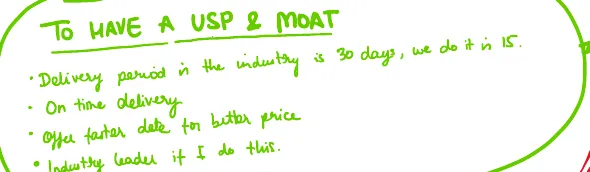
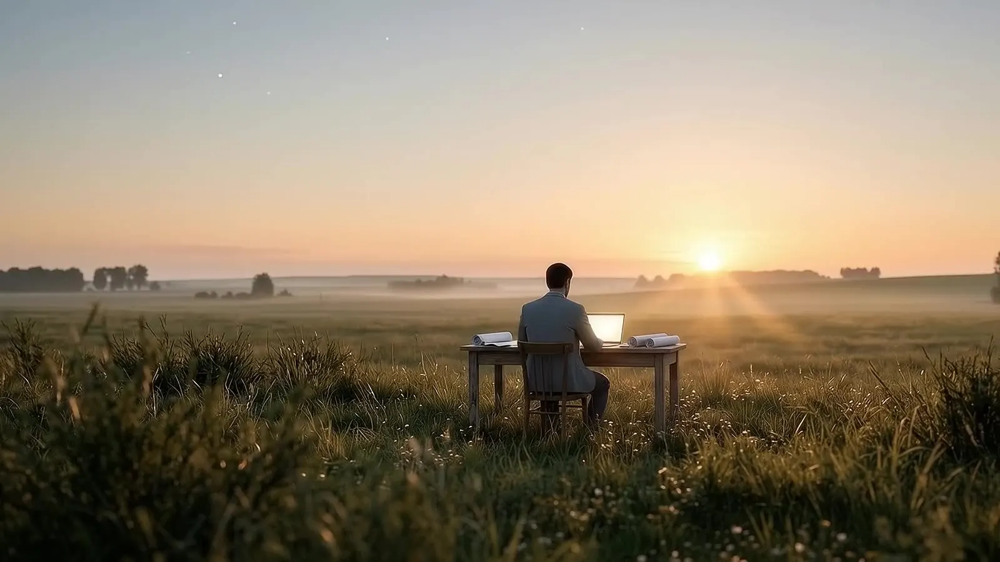
Architect · Projects Director, House of Cosmos
What I believe
I think of a building as a living system. It should make some of its own energy, reuse its own water, keep things growing on it and be made of materials that cost the planet less. Built right, it keeps getting better after we leave.
All of that costs more on day one. And on day one, nobody pays a developer for water that will be saved in year eight. That is the skewed incentive in my industry, and it is why so many cities are turning into glass boxes.
I build for year eight anyway. Here is the first test.
Pilot 01 · Trividh
Trividh, by House of Cosmos: an art deco building in Naupada with a small water plant inside it. Here is the bet I am making with it.
HypothesisA building can clean and reuse 90% of its own grey and rainwater.
Grey water a building on this system would have reused today, so far
0litres
400 people · 95.3 lakh litres a year
Counted from midnight, your time. Assumes each person uses 157 litres a day, 87 of it grey water, recovered at 75% efficiency, from my grey water calculator.
Hotel check-ins
No calls, no site visits. A whiteboard, coloured markers and one question: what keeps breaking, and what system would stop it?
Most of the frameworks come from nine months in Rahul Jain's course, which taught me what sites never did: keep the data. We now measure everything on site and off, on time, and our customers can see it on their phones. The check-ins are where it all turns into how House of Cosmos runs. Everything below is running today.
The scans are from the 9 and 10 October 2026 board.
Where the industry's delivery period is 30 days, ours is 15, and the date holds. Faster and on time is what we actually sell.

No job starts until the information, material and labour are 100% ready. Kaam rokne se kaam jaldi hota hai. Holding a job back is what makes it finish sooner.
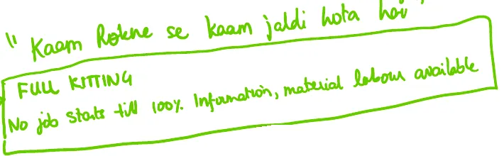
We map the critical path and plan every step at half its usual time. A 16-day step is planned as 8, and 4 days go into one safety buffer the whole project shares.
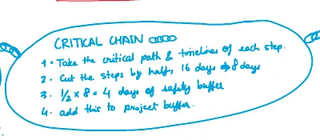
Every business has one thing that makes everything else easier or unnecessary. For us it is on-time delivery.
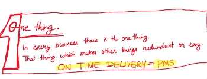
It can't be eaten tomorrow. Delayed data is corrupted data, so nothing on our sites is kept overnight.
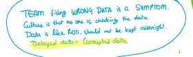
80% of problems are not human errors. When something breaks, we fix the system.
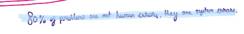
What we measure gets done. Everyone is measured on two things: how much of their work got done, and how much of it got done on time.
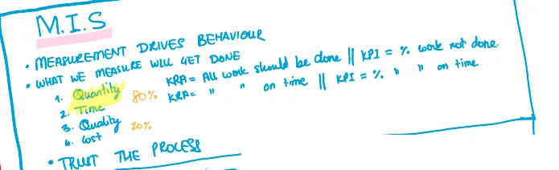
A system should be built for the customer, not for us. So every customer gets a dashboard with their own data on it.
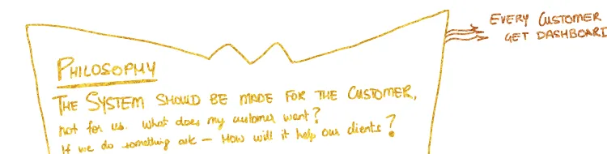
No other meetings. Planning, reports, approvals, every payment and every purchase order happen on Monday. Anything that comes up later waits for the next Monday. Saturdays are only for reviewing the week.
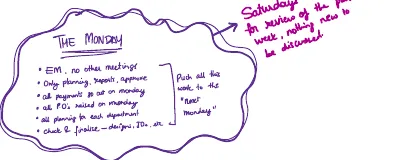
My team does. They spend three hours every week building new ones and reviewing last week's, with four rules: make a list, define the result for the client, never launch a system without results, and keep it to five steps.
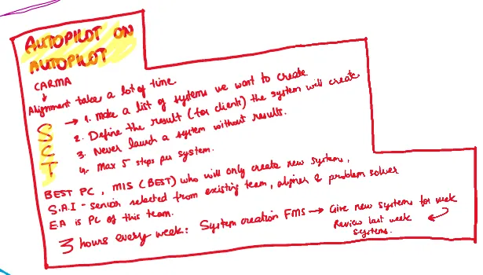
Questions move down four steps. First, they ask and we answer, and nobody grows. Then they bring a recommendation and the reason. Then they decide, act and tell me. Then they just decide and act.
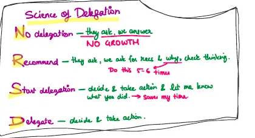
My father
Everyone is a king of their own lives. So when you meet someone, talk as if two kings are speaking.
Suraj Parmar said that, and I still repeat it word for word: to buyers, to contractors, to my team.
House of Cosmos is the next chapter of the Cosmos legacy, founded in 2000 by Suraj Parmar and now led by his sons, Ar. Akshit Suraj Parmar and Abhishek Parmar, building on the principles he was known for. Since 2000, the Cosmos legacy has delivered 60,000+ homes.
The weekly letter
Every week I write a letter to my family and close friends. Philosophy, life, business, and whatever I am building. It is a friendly email, nothing more. You can get it too.
You think my beliefs are naive and I am going to fail. Subscribe and you will be the first to know.
You think I might actually make it work. Subscribe and watch it happen.
If you searched for me
I am an architect and real estate developer, registered with the Council of Architecture. I did my Master's in design and construction in the Netherlands. I am Projects Director at House of Cosmos, which I run with my brother Abhishek, and I am building Trividh, my pilot project.
Yes. My father started the Cosmos legacy in 2000. House of Cosmos is its next chapter, run by my brother and me.
A House of Cosmos residential building in Naupada. Art deco design, bird nests built into the facade, and a water system that reuses 90% of its grey and rainwater.
Call the House of Cosmos office on +91 99202 79296 or email contact@houseofcosmos.co. If you want to meet, ask for me. I will be on time.